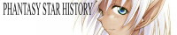
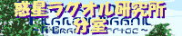
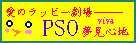
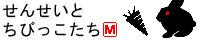
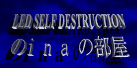
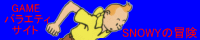

|
| バナー（HPタイトル） |
管理者(敬称略） |
主な内容 |
|
| 第２回更新分 |

ファンタシークエスト |
ブライアン |
・ファンページ |
| メッセージ |
大まかな分類で初心者専用のページを目指しています。基本をモットーに初めての方をお迎え致します。 |
|

pso style |
たかゆき |
・ファンページ
・攻略
・チーム |
| メッセージ |
PSOファンの・PSOファンによる・PSOファンのためのHPです！PSO全般を扱ってます！また、チームも運営していますので興味があればどうぞ、狭くても深い人間関係がモットーですので☆よろしくお願いします(^o^)/ |
|
| メッセージ |
はにゅ?♪(￣×￣)／
当サイトは全コンテンツ携帯対応ページです！通勤・通学中はもちろん仕事中・授業中も閲覧OK（駄目）いつでもどんな時でも気楽に寄っていってください♪ |
|

フォークロＰＳＯ！ |
京橋刹那
（きょうばしせつな） |
・ファンページ（メイン）
・プレイ日記
・攻略
・CG・イラスト |
| メッセージ |
フォークロＰＳＯ！では「気軽に遊び行けるサイト」をモットーとしてますのでよろしければ一度覗いてみて下さいね！ちなみにサイトの方は、他とは違う管理人こだわりのデータ集や子ネタ集など掲載してます。データなどを詳しく知りたい方は一見の価値ありかも！
フォークロPSO！ロビーは３-１４-１になってます。 |
|
PSO |
Osakana |
・ファンページ
・プレイ日記 |
| メッセージ |
ラグオルにおいてだけでなく、PSOを通じて多くの人と友達になりたいと
思っています。その場所を提供できれば幸いです。PSOのプレイ日記がメインです。「ガイジンさん」とよく遊ぶのでPSOを通じた諸外国の見聞録みたいになっていけばなぁ、と思っています。遊びに来てみてくださいね！ |
|
PSO CRAZY HUNTERz |
R3 |
・ファンページ |
| メッセージ |
PSOをより広く遊ぶための簡単な英会話紹介や、個人レベルでの常時接続サポート、他にも４コマなどもあります。新情報も随時追加予定！ |
|

おんなのこだってＰＳＯしたいんだもん！ |
かなん |
・ファンページ |
| メッセージ |
ＰＳＯなダイアログでは、ＰＳＯをプレイされた方がニヤリと笑える作品を用意しています。オンラインで定期的に談話室「平安京（7-9-4）」をやっています。冒険仲間探し、怒涛のおしゃべりでわいわいやってます。気軽にお越しください。 |
|

GUILD SILKRAIN |
sheena |
・ファンページ |
| メッセージ |
こちらは、PSO に参加するプレイヤーの皆さんのための交流ページです。皆さんのキャラクター・プレイヤー本人の情報を、当ＨＰ上にて紹介する事が出来ます。BBS
なども設置しておりますので、どうぞお役立てください。気が向くと、管理人がイラストを描いたりもするようです（ｗ |
|
PSO同盟 |
聡和ユウシロウ |
・ファンページ
・創作
・CG
・イラスト |
| メッセージ |
PSOファンのための同盟です。PSOやっている方、やっていなくても興味のある方は、是非参加してくださいｖ
近いうちにNovel＆CＯＭＩＣも入れる予定です。 |
|

PHANTASY STAR HISTORY |
邪琅明
（じゃろうあきら） |
・ファンページ
・考察 |
| メッセージ |
このサイトは、ファンタシースターシリーズ及びPSOについて、各作品の紹介・相互関連からPSOに至るまでの流れ、ダークファルスについて、またNPCの相互関係について等、様々な考察を行っていくサイトです。作品世界について深く知りたい方は是非おいで下さい。（なお、PSOについてはクリアを前提にした作りとなっておりますので、まだオフラインをクリアされていない方は是非クリアしておいで下さいませ(^^;）。 |
|
Assault Discharge Ship Charon |
AIOS |
・ファンページ |
| メッセージ |
当ホームページは、Phantasy Star Online
で入手したアイテムをオークションに出品し、プレイヤー同士の取引をサポートすることを目的としております。プレイヤー同士の交流がこのページを利用してより一層深まることを、心より望みます。 |
|

惑星ラグオル研究所 分室 |
Friar（フライア） |
・ファンページ |
| メッセージ |
「ラグオル生物研究室」では、惑星ラグオルに生息する生物たちを地球の生物学に当てはめて（ちょっと強引に）検証しています。ナノノドラゴ巨大化の謎もここを読めば納得！？
「調査日誌」や初めてプレイする人も安心の「ハンターズへの道」なども掲載しています。では、所長のフライアより一言。
『肩肘張らずに、気楽に読んでね。調査依頼大歓迎っ！！』 |
|
| メッセージ |
マイキャラのChie（チィ）を中心に、皆様とのご交流をメインとしたページです。プレイヤー同士、またはキャラクター同士による掲示板交流。またCGコーナーもありますので、こちらも是非見に来てくださいませ?♪ |
|

えび〜ず・ＰＳＯ |
えび |
・ファンページ |
| メッセージ |
ＰＳＯ関連のＮＥＷＳを紹介しています。その他フォトコンテストなどのイベントを定期的に開催していく予定です。 |
|

STAR LIGHT |
inor |
・ファンページ |
| メッセージ |
全部のキャラのカラーやこれからPSOをしようという人をターゲットに作り上げました。くやしいですがある程度慣れたら余所のページさんの方が強いです。作者をラグオルで見るのはレアモンスターよりレアらしいですし。。。マグ育成ツールだけは長い事重宝いただいております。 |
|
| メッセージ |
ねこニュエ〜ル隊がお送りする、まったりＰＳＯファンサイト。イラスト・ショートシナリオ・微妙なデータなど扱っております。楽しくまったりとしたＰＳＯライフを、木陰で応援しちゃってます。皆様のご来店をおまちしております☆ |
|

ラグオル観光 |
koba |
・ファンページ |
| メッセージ |
当社では、ＰＳＯを何十倍も楽しむための各種ツアーを用意し、皆様のお越しをお待ちしております。ツアー対象は、初心者から上級者まで問いません。その他、様々な静止画・動画、創作小説、掲示板、チャット等を常備。 |
|
Yoshi-HP 2001 |
Yoshi |
・ファンページ |
| メッセージ |
掲示板と仲間紹介をしています。みんな来てね〜。あとＣＧなんかも募集しています。 |
|

傭兵派遣サービス |
悪婆泣
（おばきゅう） |
・プレイ日記
・チーム
・創作・CG・イラスト |
| メッセージ |
楽しくをモットーに運営してます！イラスト・日記・写真など展示してます。
只今チームＷｈｉｔｅ Ｎｕｔｓのメンバー募集中です！どうぞお気軽に覗いてくださいネ！！ |
|

ＰＳＯｖｉｖａ夢見心地 |
ユウト |
・ファンページ |
| メッセージ |
ラッピ―をこよなく愛するラッピ―中心のサイトです。
ラッピ―への愛を再認識しましょー
他にセリフ自慢掲示板があります。 |
|
| メッセージ |
ＰＳＯの英会話がメインのＨＰです。海外交流に少しでもお役に立てれば嬉しいです。
他にはイラスト、日記、ＢＢＳがメインコンテンツです。 |
|
〜おとぎの星の上で〜 |
水無月ゆらぎ
/Annasword |
・ファンページ
・プレイ日記
・チーム
・創作 |
| メッセージ |
PSOをプレイした管理人が、日記のようなものを付けてみたりとか、
PSO関連の創作物を発表してみようとか、友人との連絡用にと思ってつくったものです。
ネットワークゲームを楽しもうという趣旨の仲間が集まったギルドページのPSO版のHPでもあります。 |
|

せんせいとちびっこたち |
MEARY |
・ファンページ |
| メッセージ |
主にラグオルでお会いした方々との記念写真を紹介しています。
その他としては既に発売されているファンタシースターシリーズの 攻略をしています。あの感動を再びっ！
また掲示板はI-Mode対応となっていますので通勤・通学のお供に
どうでしょうか？ |
|
| 第１回更新分 |
PSO JAZZ |
jeha |
・総合ファンページ
・日記 |
| メッセージ |
興味本位の更新ぶりと見た目重視のポリシーでお贈りするイイカゲンデータサイト。メインはマグと武器と日記。 |
|
ファンタシースターDESTRUCTIVE |
５６３（ゴロサン） |
・総合ファンページ
・考察
・その他 |
| メッセージ |
PSシリーズ全体の中の１作品としてのPSOを、SF的に考察をすすめております。屁理屈大好きな方々は、是非に！ |
|

PSO情報部 |
CCB |
・総合ファンページ
・攻略
・チーム |
| メッセージ |
「PSOを、みんなで楽しもう!!」をテーマに、
・PSO基本講座/FAQ
・攻略/レアアイテム情報
・PSO最新News
といった情報に加えて、Team ChaoというPSOを楽しむためのチームを結成して、情報交換やオンラインクエストなどを行っています。是非、遊びに来てくださいね。 |
|
-PSO CLUB- |
ＳＵＲＦ |
・総合ファンページ
・イラスト |
| メッセージ |
ちわちわ〜。
主にドリフラで描いたイラストをメインに運営しております。
ＤＣでのＨＰ制作に役だつサイトへのリンクもあり。 |
|
情報酒場「GOE-CHAN」 |
ゴエっち［GOE-CHAN］ |
・総合ファンページ
・情報交換BBS |
| メッセージ |
マナーを守って頂ければ、使い方は自由です！チームを組んでいる方も組んでいない方も、何方様でも気軽に御利用ください！HP持っていないチームの集合場所としても便利(？)です。 正義のヒーロー［MasterDRAGON］に会いたい方もコチラへ！ |
|

LED SELF DESTRUCTION
inaの部屋 |
Distress |
・総合ファンページ
・専用BBS
・MYキャラ紹介etc |
| メッセージ |
個人のコンテンツてんこ盛りなHPですが、最近はPSOのページが拡大、独立しつつあります(笑)っス。トライアルから盛り上がってますので、是非ゲーム共々楽しく遊びましょう。 |
|

「SNOWYの冒険」 |
TINTIN（たんたん） |
・総合ファンページ
・攻略
・チーム |
| メッセージ |
PSO特集をメインとしたゲームサイトです。ユーザー同士の交流を目的とし、PSO専用の掲示板も設置しました。もちろんPSO攻略も行っています。ここは管理者本人だけでなく、皆さんの情報提供によって成り立っています。他にも、自分たちで作り上げた個々のキャラのバックストーリーを考え、PSOの世界をより楽しんじゃおうという企画も考えているのでヨロシク！PSの楽しみ方や面白い情報などなど、いろんなアイデア待ってますm(_
_)m |
|
Like a PSO |
幻小 |
・総合ファンページ
・イラスト
・データベース |
| メッセージ |
当サイトは複数のＰＳＯファンの協力のもと、共同製作によって運営されています。
そして各コンテンツにはそれぞれの管理者が居り、皆さんが楽しめる様なイベントを色々と用意してお待ちしています。
その他、質問コーナーや笑いの絶えない掲示板などなど盛りだくさん。また、共同製作に参加してみたい！と言う方も随時募集中！もちろんＨＰ製作未経験、初心者もＯＫ！どうぞお気軽に訪れてみて下さいネ。 |
|
PhantasyStarOnline-智ねっと- |
智猫 |
・ユーザーコミュニケーション
・日記
・接続情報 |
| メッセージ |
プレイヤー同士のコミュニケーションや、プレイマナー紹介を目指しています。PSOの情勢が判る管理人の主観的な最新PSOニュースなどもあり、さらにメインページではフレッツISDNなど色々な接続方法を紹介しています。 |
|
PSO i-MODE GUILD |
めがです |
・ｉ-ＭＯＤＥ等の
携帯Ｗｅｂ対応
・情報交換ＢＢＳ
・小ネタＤＡＴＡ表 |
| メッセージ |
ＰＳＯプレイ中の情報交換にバッチリ安心携帯Ｗｅｂ対応ＨＰですぅ。気軽に情報交換しましょう♪ |
|